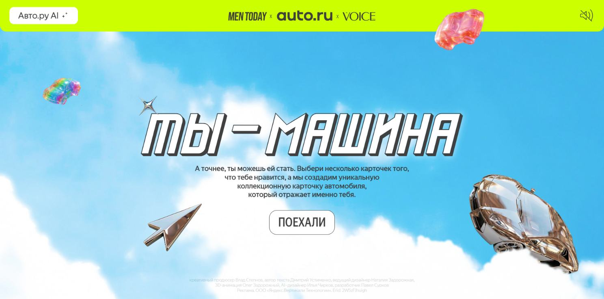
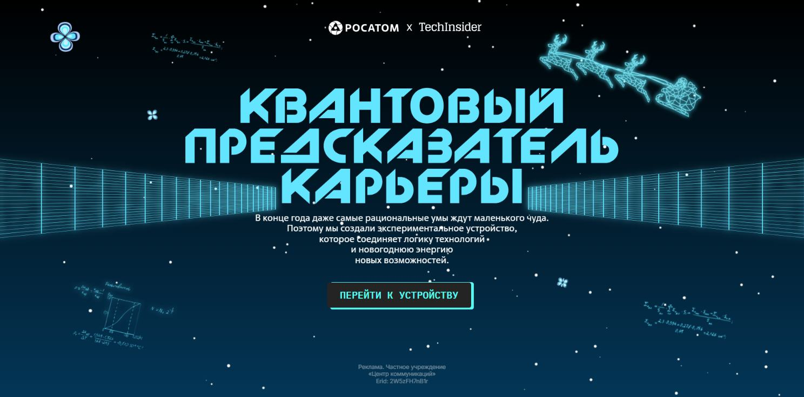
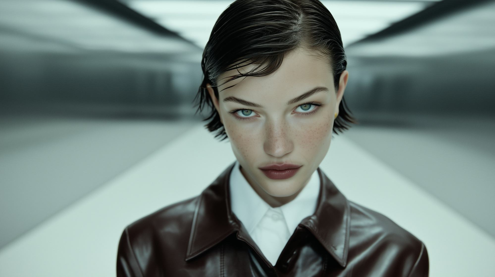
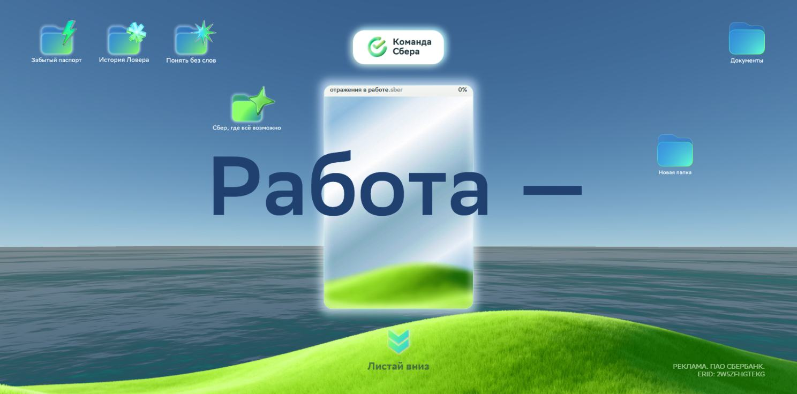
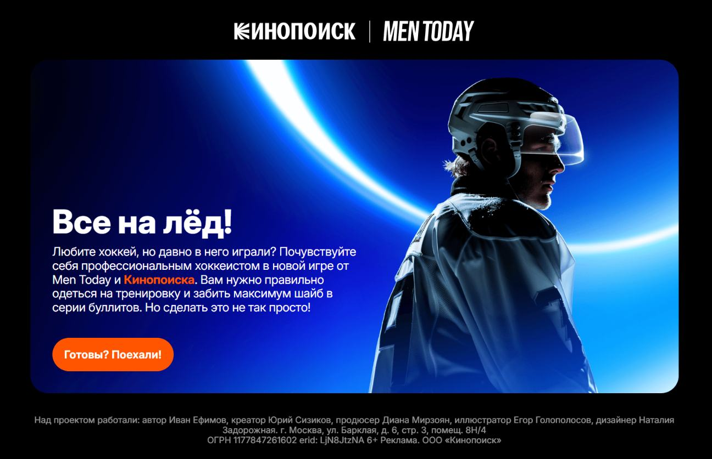

01 / Авто.ру
Ты - машина ↗
Интерактив с персональным результатом. Пользователь проходит сценарий выбора и получает AI-карточку автомобиля, дополненную 3D-анимацией.

Открыть ↗Креативный
диджитал-продюсер
Продюсирую интерактивные веб-проекты на стыке креатива и технологий: игровые механики, 3D, AI и нестандартный digital production. От идеи и бюджета до команды, технической реализации и запуска.
Написать мне ↗Превращаю креативную идею в работающий digital-проект.
Веду переговоры и бюджет, собираю проектные команды, координирую дизайн, разработку, 3D и контент. Довожу проект от идеи до запуска.
Технический бэкграунд помогает быстро оценивать реализуемость идеи, стоимость и сложность производства и говорить с исполнителями на одном языке.
Сооснователь · Blaze Bird Studio
Исследую задачу, формирую сценарий, интерактивные механики и визуальное направление.
Веду переговоры и бюджет, подбираю подрядчиков, ставлю задачи и координирую производство.
Понимаю дизайн, веб-разработку, 3D, моушен, AI-контент и путь от прототипа до запуска.
Компактная подборка интерактивных проектов Blaze Bird Studio.
Интерактив с персональным результатом. Пользователь проходит сценарий выбора и получает AI-карточку автомобиля, дополненную 3D-анимацией.

Открыть ↗Интерактивный веб-проект с 3D-моделью. Карьерные сценарии раскрываются через образ квантового предсказателя.

Открыть ↗Редакционный спецпроект об OMODA C7 на стыке автомобильной культуры и моды. AI-видео поддерживает визуальное повествование.

Открыть ↗Серия интерактивных материалов о людях, идеях и ценностях Сбера. Истории тех, кто создаёт компанию изнутри.

Открыть ↗Игровой спецпроект о сезоне КХЛ. Спортивная тема превращена в интерактивный веб-опыт с геймификацией.

Открыть ↗Интерактивная визуальная новелла с сюжетными выборами и мини-играми. Для проекта создан и заанимирован 3D-персонаж по образу реального героя проекта.
Интерактивный проект о реновации Москвы. Центральная механика - 3D-сцена в Spline, которая показывает путь от сноса старого дома до строительства новой многоэтажки.
Интерактивные веб-проекты для брендов и медиа: переговоры, бюджет, команды подрядчиков и организация производства.
Управление производством аудио- и видеопроектов: от сценария до постпродакшена.
Предыдущий опыт. Звуковой продакшен с 2007 года, затем видео и мультимедийный контент.
Figma · Tilda · Webflow · WebGL
Cinema 4D · After Effects · Premiere Pro
ChatGPT · Higgsfield · Разработка с AI
Русский - родной
Английский - B2
Греческий - B1
ННГУ им. Н. И. Лобачевского, 2015
Экономический факультет
Государственное и муниципальное управление
Диджитал-продюсер веб-спецпроектов в агентстве. Фокус: концепция, команда и производство интерактивных проектов.
В агентской команде мой фокус - концепция, команда, технологии и производство интерактивных веб-проектов.